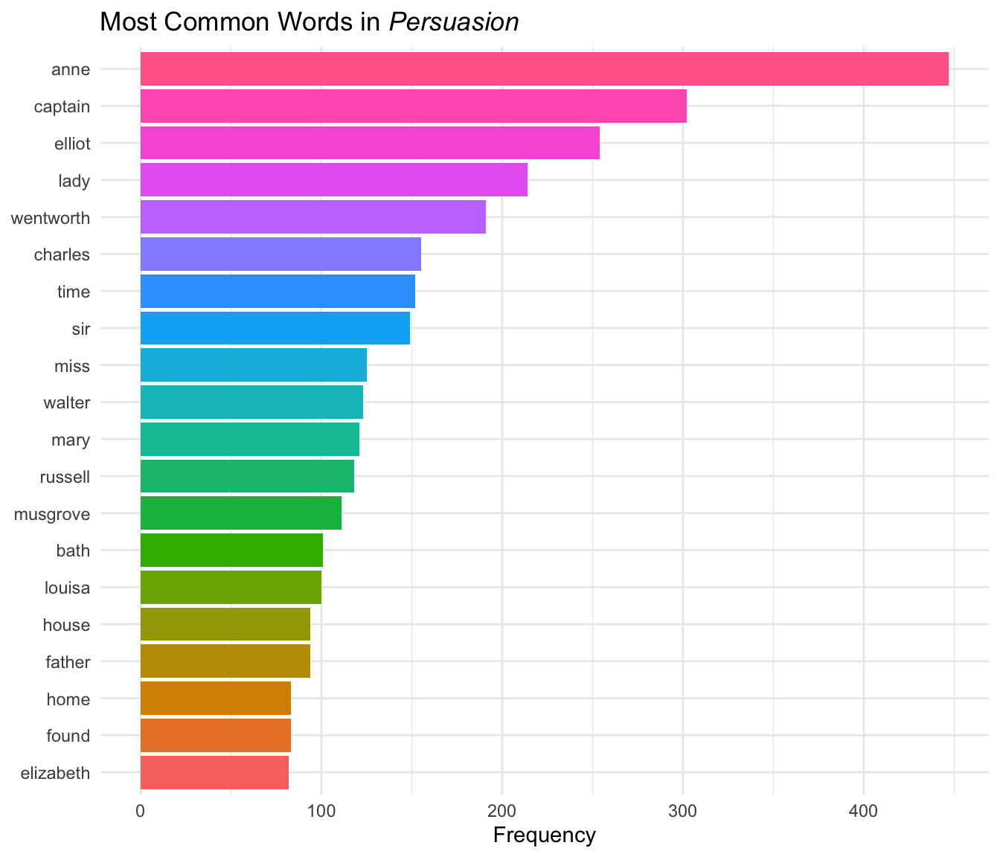
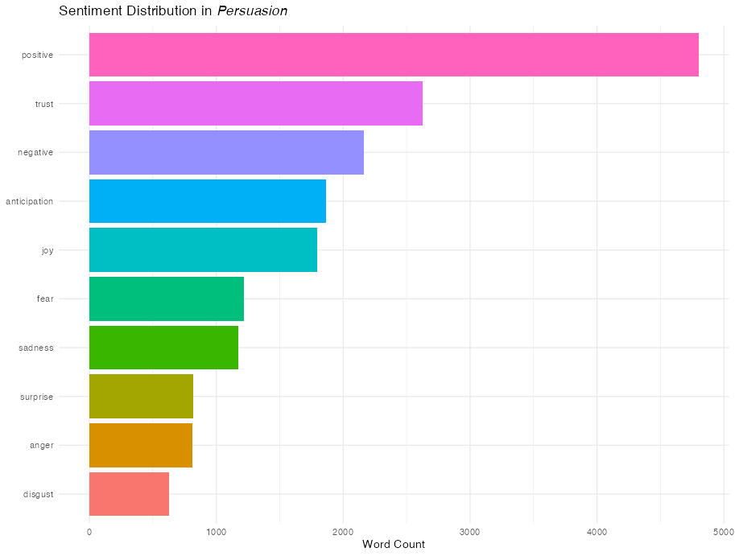
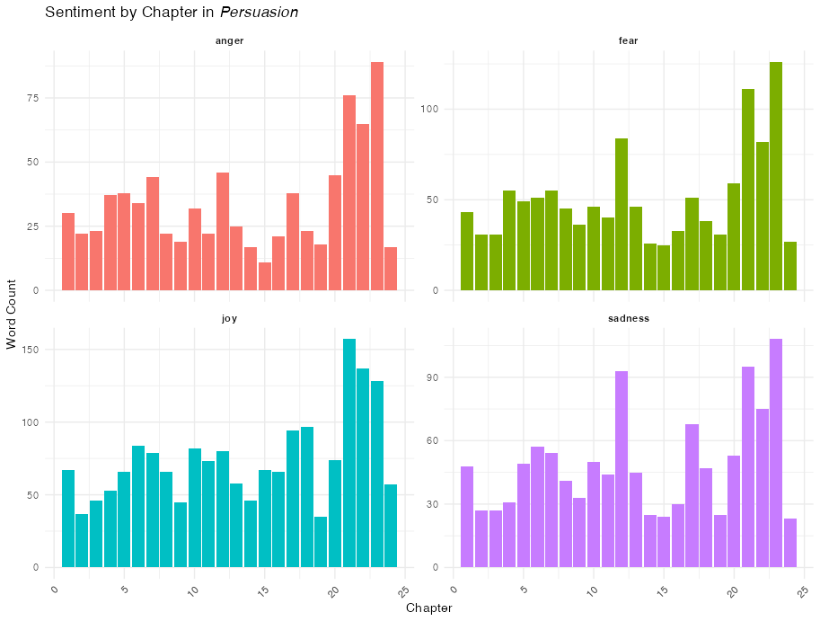
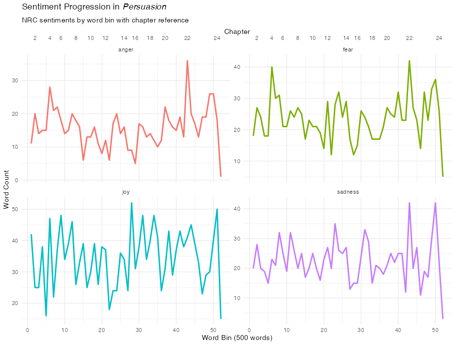
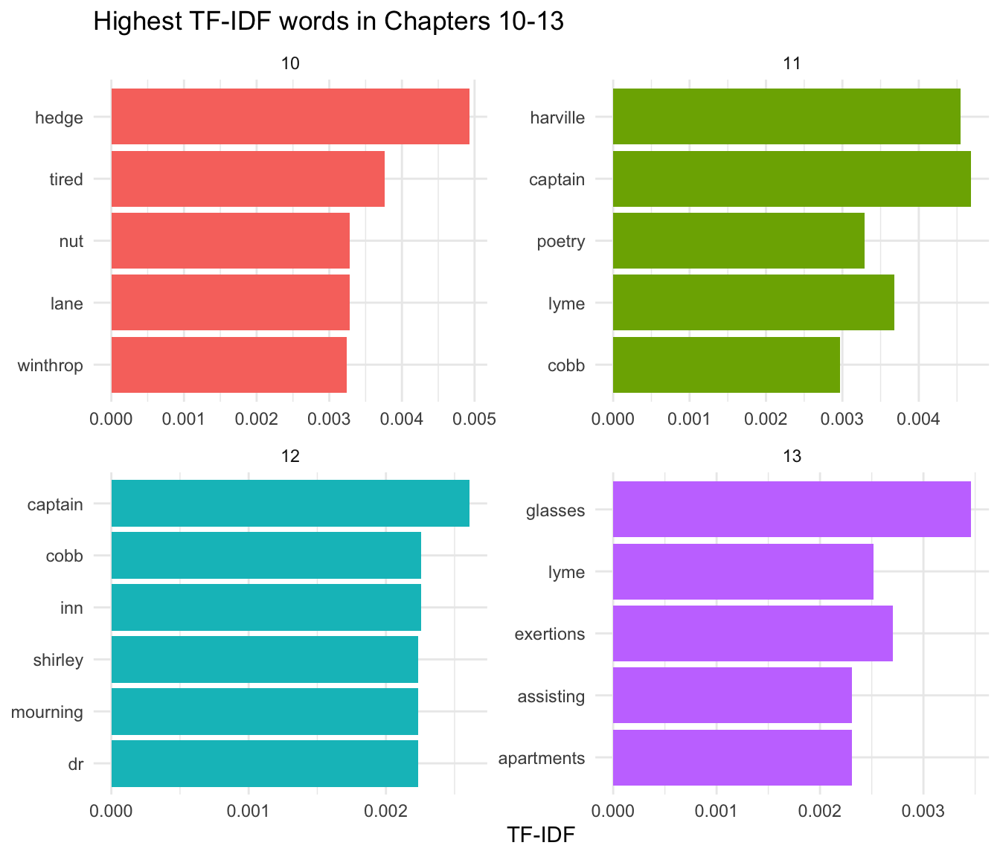

This vignette demonstrates a complete text mining workflow using gutenbergr and tidytext. We’ll perform an in-depth analysis of Jane Austen’s Persuasion, exploring its vocabulary, sentiment, structure, and themes. See Text Mining with R for a great introduction to text mining.
Download the Book
First, let’s find and download Jane Austen’s Persuasion:
gutenberg_works(str_detect(title, "Persuasion"))#> # A tibble: 2 × 8
#> gutenberg_id title author gutenberg_author_id language gutenberg_bookshelf
#> <int> <chr> <chr> <int> <fct> <chr>
#> 1 105 Persuasi… Auste… 68 en Category: Novels/C…
#> 2 56582 The Gent… Gray,… 48927 en Category: British …
#> # ℹ 2 more variables: rights <fct>, has_text <lgl>We can see there are multiple works returned. 105 is Persuasion:
persuasion <- gutenberg_download(105, meta_fields = "title")
persuasion#> # A tibble: 8,357 × 3
#> gutenberg_id text title
#> <int> <chr> <chr>
#> 1 105 "Persuasion" Persuasion
#> 2 105 "" Persuasion
#> 3 105 "" Persuasion
#> 4 105 "by Jane Austen" Persuasion
#> 5 105 "" Persuasion
#> 6 105 "(1818)" Persuasion
#> 7 105 "" Persuasion
#> 8 105 "" Persuasion
#> 9 105 "" Persuasion
#> 10 105 "" Persuasion
#> # ℹ 8,347 more rowsStructural Analysis: Adding Chapters
Project Gutenberg texts processed into tibbles of lines. To analyze
the book’s progression, we’ll use gutenberg_add_sections().
This function identifies headers and fills them down to create a
structural column.
persuasion <- persuasion |>
gutenberg_add_sections(
pattern = "^Chapter [IVXLCDM]+",
section_col = "chapter",
format_fn = function(x) {
x |>
str_remove("^CHAPTER\\s+") |>
str_remove("\\.$") |>
as.roman() |>
as.numeric()
}
)
# Preview the new structure
persuasion |>
filter(!is.na(chapter)) |>
head()#> # A tibble: 6 × 4
#> gutenberg_id text title chapter
#> <int> <chr> <chr> <dbl>
#> 1 105 "CHAPTER I." Pers… 1
#> 2 105 "" Pers… 1
#> 3 105 "" Pers… 1
#> 4 105 "Sir Walter Elliot, of Kellynch Hall, in Somersets… Pers… 1
#> 5 105 "for his own amusement, never took up any book but… Pers… 1
#> 6 105 "he found occupation for an idle hour, and consola… Pers… 1Tokenization
We need to move from a one-row-per-line format to a one-row-per-token
format. We’ll use tidytext::unnest_tokens() to split the
text into individual words and remove stop words
tidytext::stop_words.
words <- persuasion |>
unnest_tokens(word, text) |>
anti_join(stop_words, by = "word")Word Frequency Analysis
Tokenization makes it trivial to find the most frequent words in the text:
word_counts <- words |>
count(word, sort = TRUE)
word_counts#> # A tibble: 5,384 × 2
#> word n
#> <chr> <int>
#> 1 anne 447
#> 2 captain 302
#> 3 elliot 254
#> 4 lady 214
#> 5 wentworth 191
#> 6 charles 155
#> 7 time 152
#> 8 sir 149
#> 9 miss 125
#> 10 walter 123
#> # ℹ 5,374 more rowsLet’s visualize the top 20 words:
word_counts |>
slice_max(n, n = 20) |>
mutate(word = reorder(word, n)) |>
ggplot(aes(x = n, y = word, fill = word)) +
geom_col(show.legend = FALSE) +
labs(
title = expression(paste("Most Common Words in ", italic("Persuasion"))),
x = "Frequency",
y = NULL
) +
theme_minimal()
Character names (Anne, Captain, Elliot, Wentworth) dominate the most frequent words, which makes sense for a character-driven novel.
Sentiment Analysis
Natural language processing uses sentiment analysis to identify emotive/affective states.
Overall Sentiment
Let’s use the NRC sentiment lexicon, which classifies words into categories like “joy”, “trust”, “fear”, and “sadness”. This will allow us to view the overall sentiment of the book.
Note: The NRC lexicon requires accepting a license agreement during installation and is only free for non-commercial use. The code below shows the analysis workflow, with pre-computed results displayed.
nrc_sentiments <- get_sentiments("nrc")
word_sentiments <- words |>
inner_join(nrc_sentiments, by = "word", relationship = "many-to-many") |>
count(sentiment, sort = TRUE)Visualize the distribution of sentiments:
word_sentiments |>
mutate(sentiment = reorder(sentiment, n)) |>
ggplot(aes(x = n, y = sentiment, fill = sentiment)) +
geom_col(show.legend = FALSE) +
labs(
title = expression(paste(
"Sentiment Distribution in ",
italic("Persuasion")
)),
x = "Word Count",
y = NULL
) +
theme_minimal()
By Chapter
We can aggregate these sentiments by the chapter structure we created earlier.
nrc_by_chapter <- words |>
inner_join(nrc_sentiments, by = "word", relationship = "many-to-many") |>
count(chapter, sentiment) |>
filter(!is.na(chapter))
nrc_by_chapter |>
filter(sentiment %in% c("joy", "sadness", "anger", "fear")) |>
ggplot(aes(x = chapter, y = n, fill = factor(sentiment))) +
geom_col(show.legend = FALSE) +
facet_wrap(~sentiment, ncol = 2, scales = "free_y") +
labs(
title = expression(paste("Sentiment by Chapter in ", italic("Persuasion"))),
x = "Chapter",
y = "Word Count"
) +
theme_minimal() +
theme(
axis.text.x = element_text(angle = 45, hjust = 1),
strip.text = element_text(face = "bold")
)
Sentiment Progression
We can also see the general emotive content as the book progresses by dividing the text into bins of words to track how specific emotions fluctuate across the narrative arc.
For good measure, let’s add another x-axis with chapter labels so we can correlate the sentiment with portions of the narrative.
# Add a running index to preserve order and calculate bins
words_with_index <- words |>
mutate(word_index = row_number()) |>
mutate(bin = (word_index - 1) %/% 500 + 1)
nrc_binned <- words_with_index |>
inner_join(nrc_sentiments, by = "word", relationship = "many-to-many") |>
count(bin, sentiment)
# Add labels for chapters
chapter_breaks <- words |>
filter(!is.na(chapter)) |>
mutate(word_index = row_number()) |>
group_by(chapter) |>
slice_min(word_index, n = 1) |>
ungroup() |>
mutate(
bin = (word_index - 1) %/% 500 + 1
) |>
filter(chapter %% 2 == 0)
nrc_binned |>
filter(sentiment %in% c("joy", "sadness", "anger", "fear")) |>
ggplot(aes(x = bin, y = n, color = sentiment)) +
geom_line(linewidth = 1, show.legend = FALSE) +
facet_wrap(~sentiment, ncol = 2, scales = "free_y") +
scale_x_continuous(
name = "Word Bin (500 words)",
sec.axis = sec_axis(
~.,
breaks = chapter_breaks$bin,
labels = chapter_breaks$chapter,
name = "Chapter"
)
) +
labs(
title = expression(paste(
"Sentiment Progression in ",
italic("Persuasion")
)),
subtitle = "NRC sentiments by word bin with chapter reference",
y = "Word Count"
) +
theme_minimal()
TF-IDF: Finding Unique Chapter Words
While simple frequency tells us who the main characters are, TF-IDF, or term frequency–inverse document frequency, tells us which words are most important to a specific chapter relative to the rest of the corpus. This is excellent for identifying specific plot points or settings (like the move to Bath or the trip to Lyme).
chapter_words <- persuasion |>
unnest_tokens(word, text) |>
count(chapter, word, sort = TRUE) |>
bind_tf_idf(word, chapter, n)
# Look at the most "important" words for chapters 10 through 13
chapter_words |>
filter(chapter %in% 10:13) |>
group_by(chapter) |>
slice_max(tf_idf, n = 5) |>
ungroup() |>
mutate(word = reorder(word, tf_idf)) |>
ggplot(aes(tf_idf, word, fill = factor(chapter))) +
geom_col(show.legend = FALSE) +
facet_wrap(~chapter, scales = "free") +
labs(
title = "Highest TF-IDF words in Chapters 10-13",
x = "TF-IDF",
y = NULL
) +
theme_minimal()
Highest TF-IDF words for chapters 10–13, showing the most chapter-distinctive terms relative to the rest of the novel.